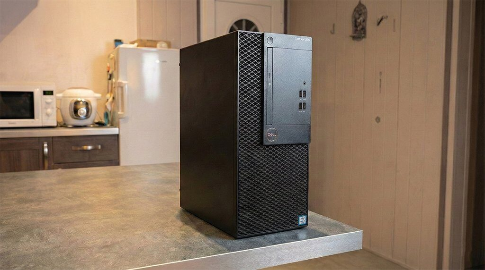
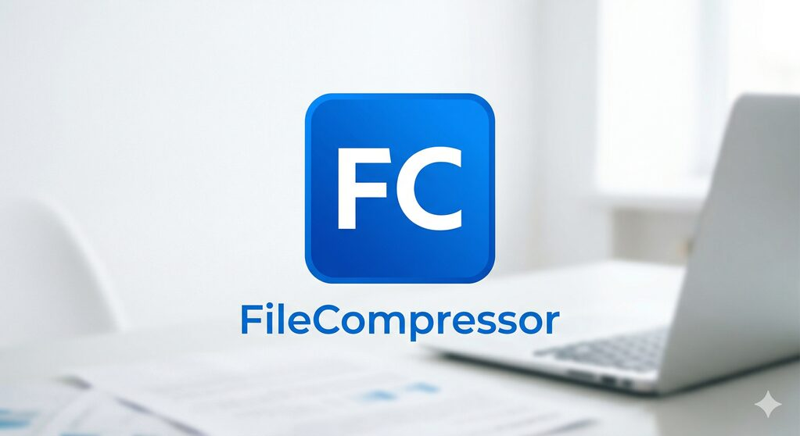
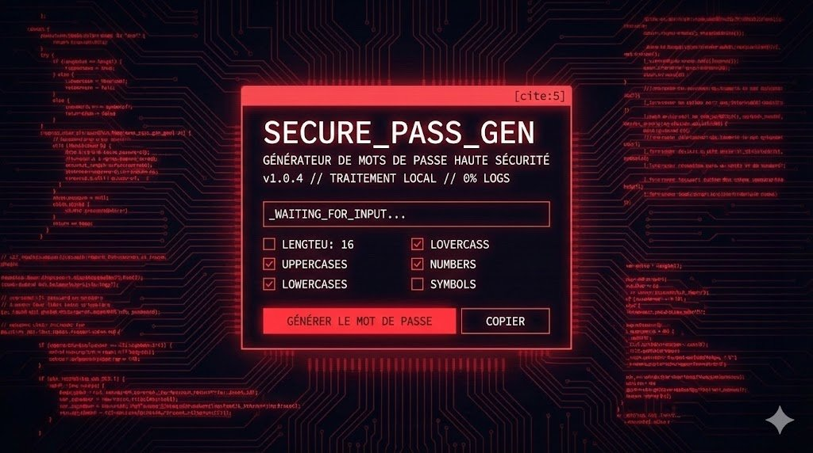
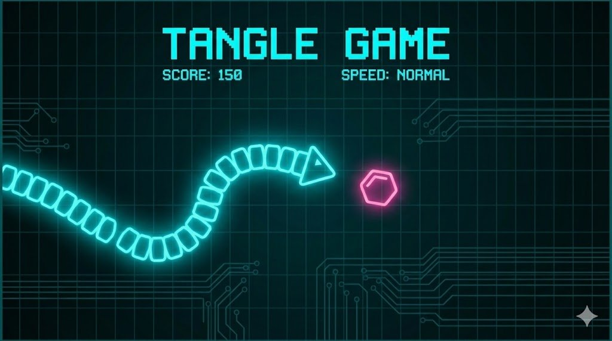
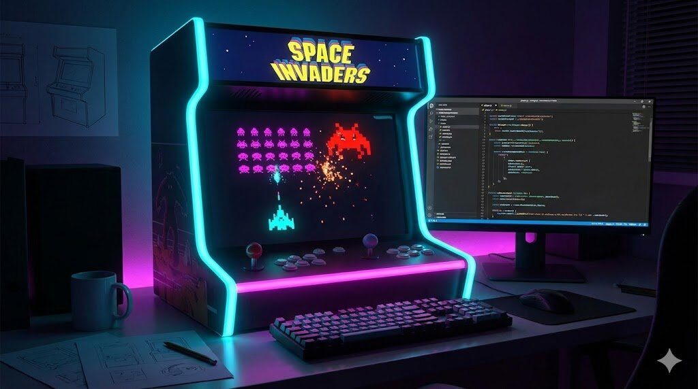

Mes Projets
Créations personnelles et réalisations techniques

NAS DIY
Serveur NAS réalisé à partir d'un ordinateur de bureau Dell Optiplex 3050, celui-ci tourne sous OpenMediaVault ainsi que CasaOS (pour l'interface)
Veuillez cliquer sur le bouton "Voir le PDF" pour plus de renseignements.
Tous les Projets

FileCompressor
Logiciel de compression de fichiers (PDF, Images, Documents)
Application desktop performante avec interface moderne

Secure_Pass_Gen
Générateur de mot de passe sécurisé
NO LOG (CLIENT SIDE ONLY)

THE TANGLE
Jeu Snake
Réalisé en Javascript, HTML et CSS

SPACE INVADERS
Jeu Space Invaders
Réalisé en Javascript, HTML et CSS
NAS DIY
Serveur NAS réalisé à partir d'un ordinateur de bureau Dell Optiplex 3050, celui-ci tourne sous OpenMediaVault ainsi que CasaOS (pour l'interface)
Veuillez cliquer sur le bouton "lien externe" pour plus de renseignements.